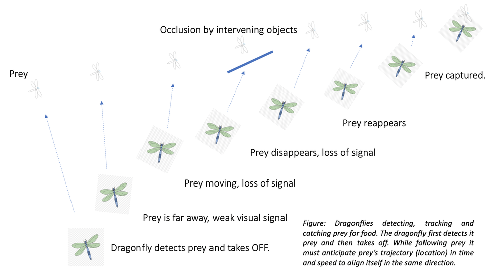

|
Models for Propagating Facilitation in the Insect Visual System
Detecting and tracking moving targets within a visual scene is a complex task. Over thousands of years,
many species of animals like flying insects have evolved neural mechanisms for tracking path or location
of flying targets that move against the visually cluttered background.

Small target motion-detecting (STMD) neurons found in the visual pathway of flying insects display
remarkable selectivity and sensitivity to small moving targets and are thought to support these mechanisms.
Contributing to their sensitivity is a form of facilitation, in which the responsiveness of an STMD is
enhanced by prior exposure to a small target moving along a continuous path in visual space.
The locus of facilitation in the receptive field is found to be local to the area of the target and to
continue propagating in the direction of target motion even after a stimulus ceases. We are modeling this
phenomenon with the propagation of traveling waves in densely interconnected, retinotopic layers of cells.
We hypothesize that waves are initiated and reinforced by the presence of a moving target stimulus, and
the network, in turn, interacts with STMDs to modulate their excitability. Membrane potentials travel too
fast to play this role, so we have studied and modeled propagating calcium waves as a possible mechanism.
Accordingly, we have proposed two models that could be the biological substrate for this sort of mechanism:
1) a network of astrocyte-like glia cells, and
2) a network of neurons; both in which calcium waves are initiated by target stimuli and propagate via diffusion
with the participation of regenerative mechanisms.
|